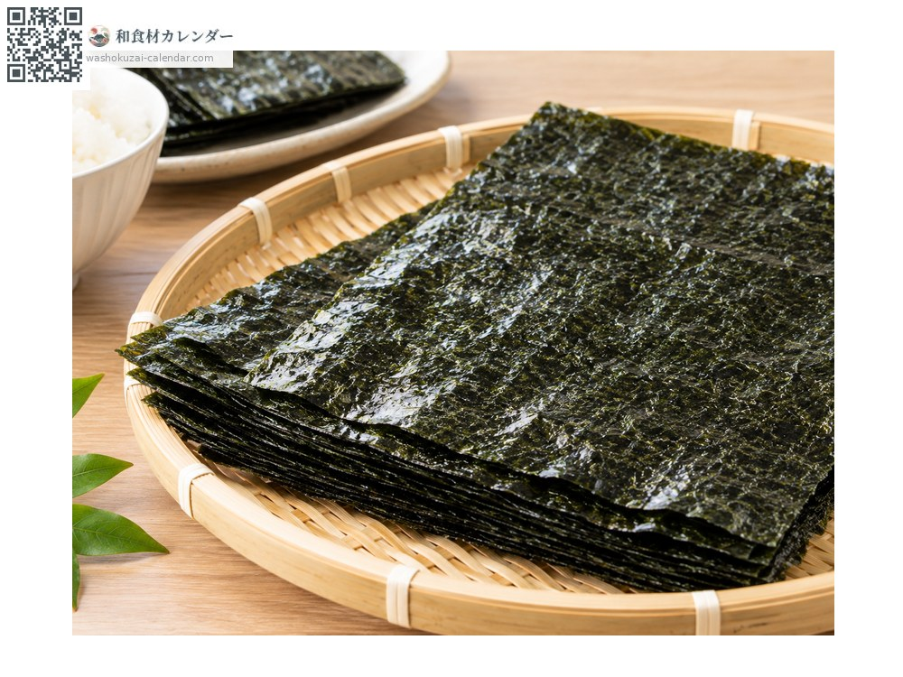
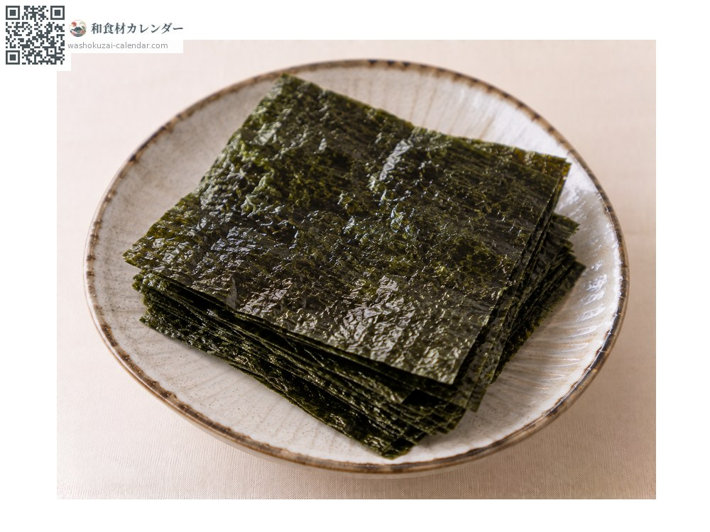
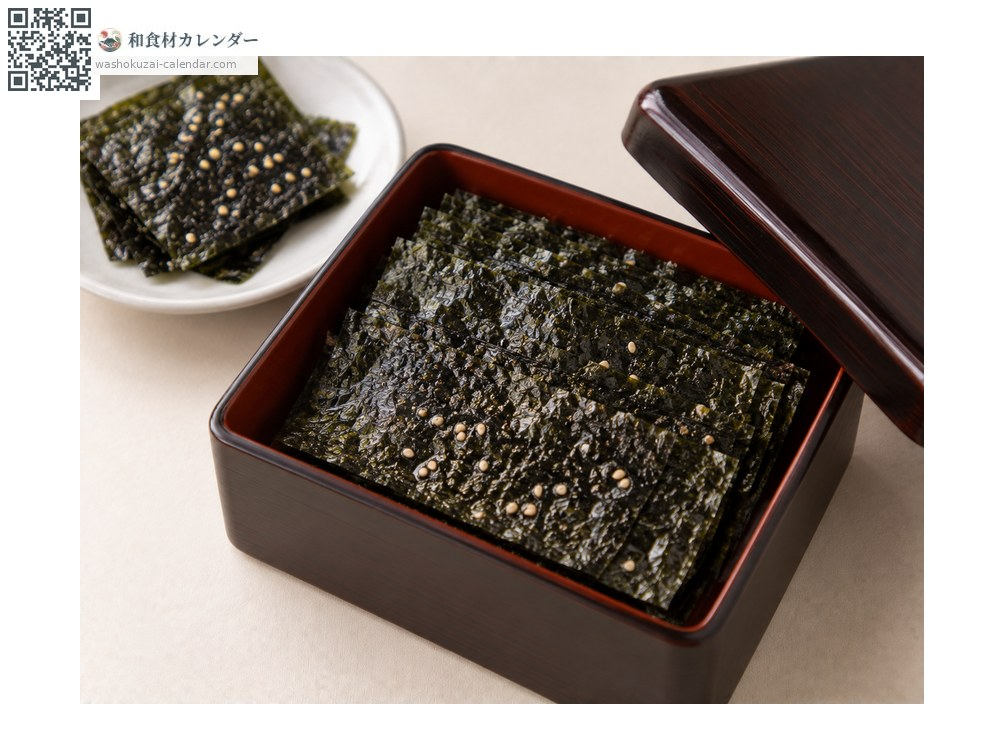
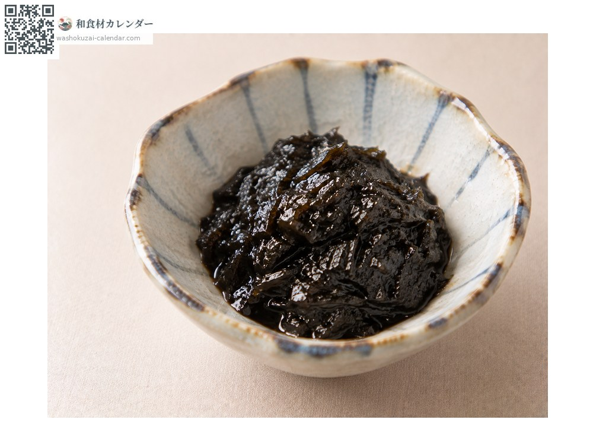
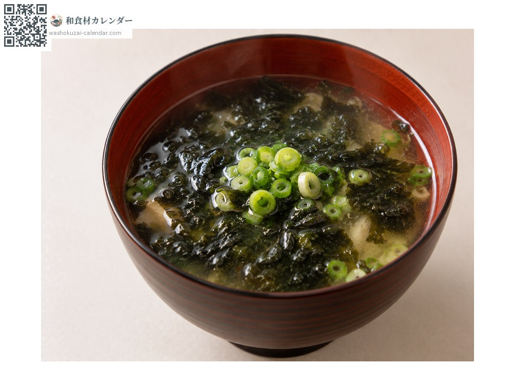

海鲜
海苔
ノリ のり nori
别名nori
应季时期为1月、2月、12月

应季时期
1月
2月
3月
4月
5月
6月
7月
8月
9月
10月
11月
12月
应季有供应
烹饪方法

烤海苔
用来包饭团或手卷。

调味海苔
刷上酱油调味。

佃煮（酱油糖浓炖）
生海苔以甜酱油炖煮。

海苔清汤
浮在汤里品尝香气。
挑选方法
黑得浓、有光泽。对光看时透光均匀。
保存方法
怕受潮。与干燥剂一起密封保存，开封后尽早用完。
主要产地
小知识
佐贺有明海是最大产地。冬天最初采收的「一番摘み」最柔软、香气最好。